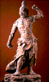

<!--This file created 10/16/97 5:51 PM by Claris Home Page version 2.0-->
<HTML>
<HEAD>
   <TITLE>Mpls Inst Arts - World Mythology: Explaining
   Practice</TITLE>
   <META NAME="GENERATOR" CONTENT="Claris Home Page 2.0">
   <X-SAS-WINDOW TOP="138" BOTTOM="480" LEFT="20" RIGHT="550">
<HEAD>
</HEAD>
<BODY TEXT="#111111" LINK="#660000" ALINK="#AA0000" VLINK="#444444" BACKGROUND="backgroundbrown.gif">

<P><FONT SIZE="+2">Curriculum Materials: World Mythology</FONT>
<HR>
</CENTER><TABLE BORDER="3">
   <TR>
      <TD>
         <P><CENTER><A HREF="introduction.html#top">Introduction</A>
         ~ <A HREF="mythbyimage.html#top">Myth by Image</A> ~
         <A HREF="culturelist.html#top">Myth by Culture</A> ~
         <A HREF="myths.html#top">Mythological Comparisons</A> ~
         <A HREF="glossary.html#top">Glossary</A> ~
         <A HREF="suggestedreading.html#top">Suggested Readings</A> ~
         <A HREF="downloadables.html#top">Downloadable Resources</A>
         ~ <A HREF="../tta/classroom_materials_order.html">How to Order</A> ~
         <A HREF="myth_evaluation.html#top">Your Comments Wanted</A>
         </CENTER>
      </TD></TR>
</TABLE>
<HR>
<A NAME="top"></A>&nbsp;<TABLE BORDER="0" CELLSPACING="10" WIDTH="445">
   <TR>
      <TD>
         <P><CENTER><FONT SIZE="+2">Myths that Explain
         Practice</FONT></CENTER></P>
         
         <P><!-- Myth By Image Table--></P>
         
         <P><CENTER><TABLE BORDER="3" CELLSPACING="0" CELLPADDING="5">
            <TR>
               <TD VALIGN="top" WIDTH="150">
                  <P><CENTER><A HREF="slide1.html#top"><BR>
                  
                  <BR>
                  
                  <FONT SIZE="-2">Image 1<BR>
                  
                  Egypt<BR>
                  
                  Mummy Case of Lady Teshat<BR>
                  
                  1085-710 B.C.</A></FONT></CENTER>
               </TD><TD VALIGN="top" WIDTH="150">
                  <P><CENTER><A HREF="slide2.html#top"><BR>
                  
                  <BR>
                  
                  <FONT SIZE="-2">Image 2<BR>
                  
                  Egypt<BR>
                  
                  Thoth<BR>
                  
                  664-525 B.C. (26th Dynasty)</A></FONT></CENTER>
               </TD><TD VALIGN="bottom" WIDTH="150">
                  <P><CENTER><A HREF="slide4.html#top"><BR>
                  
                  <BR>
                  
                  <FONT SIZE="-2">Image 4<BR>
                  
                  Nigeria (Edo)<BR>
                  
                  Memorial Tusk<BR>
                  
                  Late 18th-early 19th century (Kingdom of
                  Benin)</A></FONT></CENTER>
               </TD></TR>
            <TR>
               <TD VALIGN="bottom" WIDTH="150">
                  <P><CENTER><A HREF="slide5.html#top"><BR>
                  
                  <BR>
                  
                  <FONT SIZE="-2">Image 5<BR>
                  
                  Nigeria (Yoruba)<BR>
                  
                  King's Crown<BR>
                  
                  19th century</A></FONT></CENTER>
               </TD><TD VALIGN="bottom" WIDTH="150">
                  <P><CENTER><A HREF="slide6.html#top"><BR>
                  
                  <BR>
                  
                  <FONT SIZE="-2">Image 6<BR>
                  
                  Mali (Bamana)<BR>
                  
                  Antelope Headdress<BR>
                  
                  20th century</A></FONT></CENTER>
               </TD><TD VALIGN="bottom" WIDTH="150">
                  <P><CENTER><A HREF="slide17.html#top"><BR>
                  
                  <BR>
                  
                  <FONT SIZE="-2">Image 17<BR>
                  
                  United States (Navajo)<BR>
                  
                  Ketoh (Wrist Guard)<BR>
                  
                  About 1930</A></FONT></CENTER>
               </TD></TR>
            <TR>
               <TD VALIGN="bottom" WIDTH="150">
                  <P><CENTER><A HREF="slide20.html#top"><BR>
                  
                  <BR>
                  
                  <FONT SIZE="-2">Image 20<BR>
                  
                  Papua New Guinea (New Ireland)<BR>
                  
                  Malagan Pole<BR>
                  
                  19th century</A></FONT></CENTER>
               </TD><TD VALIGN="bottom" WIDTH="150">
                  <P><CENTER><A HREF="slide23.html#top"><BR>
                  
                  <BR>
                  
                  <FONT SIZE="-2">Image 23<BR>
                  
                  Japan<BR>
                  
                  Nio Guardian Figures<BR>
                  
                  About 1360</A></FONT></CENTER>
               </TD><TD WIDTH="150">
                  <P>
               </TD></TR>
         </TABLE></CENTER>
      </TD></TR>
</TABLE> <!--------Bottom Menu------></P>

<P></CENTER><TABLE BORDER="3">
   <TR>
      <TD>
         <P><CENTER><A HREF="introduction.html#top">Introduction</A>
         ~ <A HREF="mythbyimage.html#top">Myth by Image</A> ~
         <A HREF="culturelist.html#top">Myth by Culture</A> ~
         <A HREF="myths.html#top">Mythological Comparisons</A> ~
         <A HREF="glossary.html#top">Glossary</A> ~
         <A HREF="suggestedreading.html#top">Suggested Readings</A> ~
         <A HREF="downloadables.html#top">Downloadable Resources</A>
         ~ <A HREF="../tta/classroom_materials_order.html">How to Order</A> ~
         <A HREF="myth_evaluation.html#top">Your Comments Wanted</A>
         </CENTER>
      </TD></TR>
</TABLE></P>
</BODY>
</HTML>
